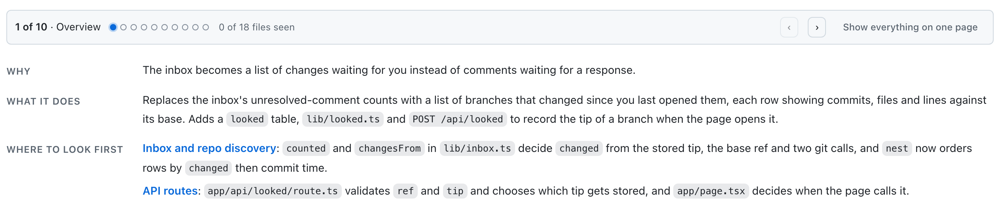
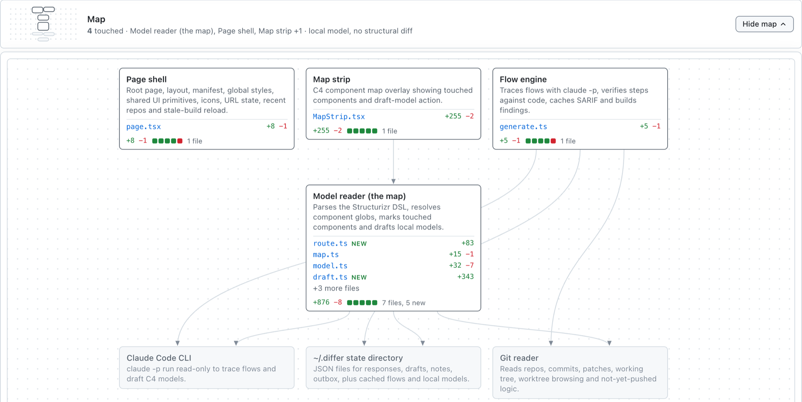
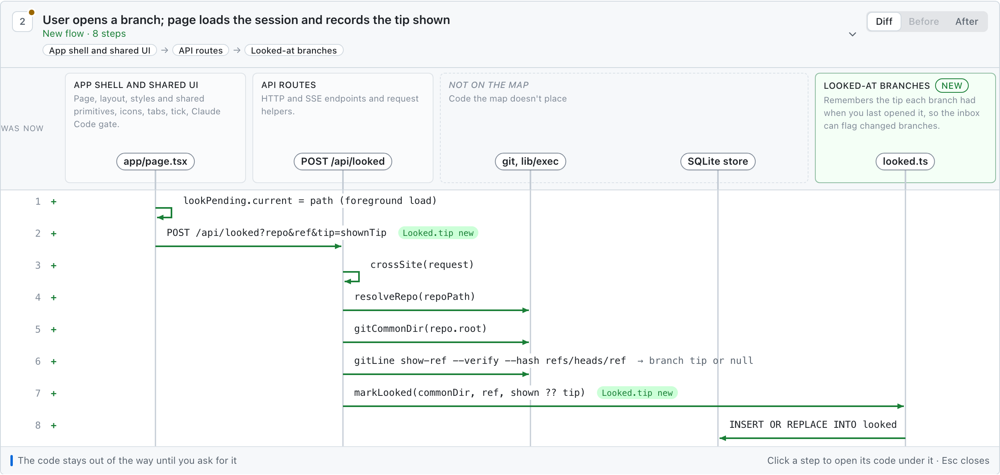
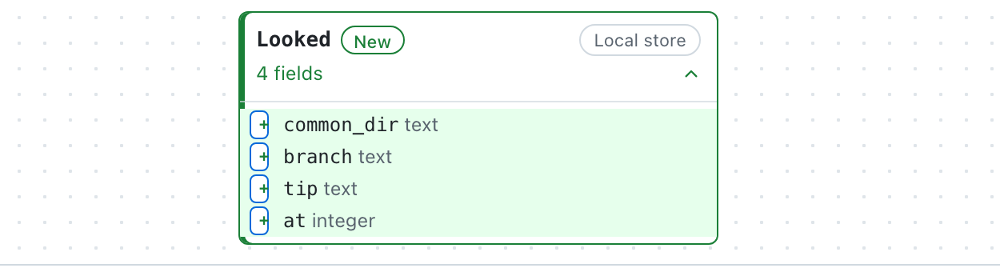

How am I supposed to review all this
In the last 12 months our coding tools have completely changed... but our review tools are still the same. What if our code review tools helped us understand the change, the system design and data model changes instead of just the code lines that changed?
When I look at a change, I want to know:
- What did it do, and why?
- Which parts of the system did it touch?
- What does each user action do now?
- What happens to the data?
Backstory is a code review visualizer built on top of Claude Code that is conceived entirely on answering those questions. We already have sequence diagrams and C4 maps - let's use those!
Try it yourself on a real PR from the Backstory repo. This PR changed the inbox from being based on review comments you hadn't seen, to code changes you hadn't seen. Compare that to the GitHub diff!
The Backstory version runs in your browser, on a recording of the app reviewing that pull request.
What did it do, and why?
Start with a few plain sentences
Every change opens with what it does and where to look first.

Which parts of the system did it touch?
See which parts of your system it touched
A C4 map highlights the components the change touches. See how it fits into the system before digging into individual files.

What does each user action do now?
Follow each user action, step by step
It shows a sequence diagram for each user action with the calls between components and what data passes between them.

What happens to the data?
Data models are tricky
A flaw in the data model is what bites us in the butt later, so Backstory highlights the changes to entities, fields and relationships before you merge.

What should I ask it to fix?
Send your notes back to the agent
If you open Backstory from an agent session, you can send your notes back to the agent, directly from the app.
Would you review your agent's work this way?
Backstory is me playing around with this concept, to get me up to
speed quickly when my agent hands me a change.
I'd love
your take: would this help you judge a change? What would you still
need before you'd merge?